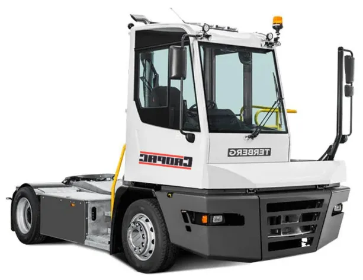

Experience Unmatched Performance with the Terberg YT223 Shunt Truck
The Terberg YT223 is engineered to tackle the unique challenges of port operations, delivering exceptional durability, maneuverability, and operator comfort. This shunt truck is built for efficiency and designed to handle high-demand tasks, such as moving trailers and containers within port terminals, warehouses, and other demanding environments.
The Terberg YT223 offers advanced features that maximize uptime and streamline maintenance, so you can keep operations moving smoothly, even in the busiest settings. With its state-of-the-art technology, ergonomic design, and rugged construction, the YT223 provides reliable performance that boosts productivity day in and day out.
Key Technical Features of the Terberg YT223:- Heavy-Duty Chassis: The YT223 features a fully hot-dip galvanized chassis, providing superior corrosion resistance and durability. This chassis is rigorously tested to handle high-impact and heavy-duty use, ensuring long service life even in challenging port conditions.
- Powerful Lifting and Towing Capacity: With a fifth-wheel lifting capacity of up to 36 tons, the YT223 is capable of handling substantial loads, making it ideal for port container movement, trailer shifts, and other heavy-duty tasks.
- Ergonomic and Spacious Cabin: The cabin is designed with the operator in mind, offering enhanced visibility through large windows, ergonomic seating, and fingertip controls conveniently located next to the seat. The intuitive control layout improves operator efficiency and reduces fatigue during long shifts.
- Advanced Electronic Architecture (Terberg EA 2.0): Equipped with the latest CAN bus-based electronic system, the YT223 supports over-the-air software updates, making it future-ready for technological advancements and seamless integration of new features.
- Enhanced Maintenance Access: The YT223’s design allows for quick and easy access to essential parts. The bumper is divided into three parts, and filters and other components are easily reachable, significantly reducing maintenance time and costs.
- Hydraulic System with Functional Safety: The hydraulic system includes double-acting cylinders and a fifth-wheel height sensor, with closed valves that secure lift height, ensuring precise and reliable operations in busy terminal environments.
- Terberg Connect Telematics (Optional): For optimized fleet management, the YT223 can be equipped with Terberg Connect, allowing managers to track vehicle movements, monitor operational data, and schedule preventive maintenance to ensure maximum uptime.
- Operator Comfort Features: The YT223 cabin includes features for comfort and safety, such as high-comfort suspension, robust mirror arms for visibility, an interior air filter, and strategically placed demisters and heaters to maintain clear visibility and a comfortable cabin environment.
- Efficient Maintenance: Designed for easy servicing and quick part replacements, reducing downtime.
- Enhanced Safety and Comfort: The ergonomic cabin, advanced control system, and optimized visibility features ensure a safe and comfortable experience for operators.
- Long-Term Durability: Built to withstand the rigors of port environments, the YT223’s durable construction ensures a high residual value and extended operational life.
The Terberg YT223 is more than just a shunt truck; it’s a powerhouse designed to meet the specific demands of port logistics with unmatched efficiency, comfort, and reliability. Engineered with a corrosion-resistant chassis and advanced electronic systems, the YT223 excels in challenging port environments, delivering high performance with minimal downtime. From its ergonomic cabin to its impressive lifting and towing capabilities, every feature of the YT223 is crafted to maximize productivity while supporting operator well-being. With the Terberg YT223, you’re investing in a long-term solution that enhances operational efficiency, ensuring smooth, reliable performance shift after shift.
